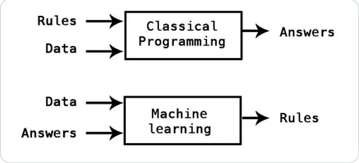
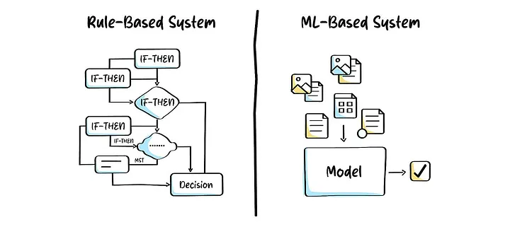

About 10 months ago, I was in a familiar position.
I had heard terms like Artificial Intelligence and Machine Learning everywhere.
I knew they were important. I knew they had the potential to disrupt industries — especially software. But beyond that, my understanding was vague.
I didn’t really know what AI actually meant, how it worked, or where it was useful and where it wasn’t.
Over the past few months, I got the opportunity to explore this space more deeply — both hands-on and through structured learning in AI and Data Science. That helped me build a much clearer picture.
This write-up is for people like me from a few months ago — people who know AI is important, but don’t yet have a clear mental model of what it really is.
I’ll keep things simple, avoid heavy jargon, and use a relatable example from the banking domain.
A simple banking system
Let’s start with something very familiar.
Consider a banking system that maintains records of customer accounts and all the transactions — credits, debits, transfers — that happen on those accounts.
Now think about the kind of questions such a system is expected to answer.
Some questions are straightforward. For example: What is my account balance? What transactions happened on my account last month?
These are problems that traditional software systems handle very well.
We understand the problem, define the logic, write the code, and the system executes it. The input is structured, the logic is deterministic, and the output is predictable.
In such systems, the flow is simple: humans define the rules, and machines execute them efficiently.
When the problem is not so straightforward
Now consider a slightly different question:
Did any suspicious transaction happen on my account?
At first glance, it may seem similar. But this problem is fundamentally different.
One way to approach it is to define rules — transactions above a certain amount, unusual locations, or odd timings. But in reality, fraud patterns are constantly evolving. Static rules quickly become outdated and require continuous manual updates.
More importantly, we don’t fully understand the exact relationship between input and output here. We don’t know precisely what combination of factors makes a transaction suspicious.
This is where traditional programming starts to fall short.
What if the system could learn on its own?
This leads to a natural question.
Instead of us trying to define all possible rules, what if we could let the system learn patterns on its own?
Imagine we have historical data:
- Transactions that were later identified as fraudulent
- Transactions that were normal
If a system could analyze this data and identify patterns automatically, it could use those patterns to evaluate new transactions.
This is where Machine Learning comes into the picture.
Understanding Machine Learning through a simple lens
From a mathematical perspective, many problems can be expressed as:
y = f(x)
Here:
- x represents the input (transaction details such as amount, location, time, frequency)
- y represents the output (fraud or not fraud)
- f(x) represents the relationship between them
In traditional programming, we define this function f(x) explicitly.
In Machine Learning, we take a different approach.

We assume that such a relationship exists, but we don’t know what it looks like. Instead of defining it ourselves, we allow the system to learn this relationship from historical transaction data.
By analyzing past examples — fraudulent and non-fraudulent — the system builds an internal representation of this relationship. Once it has learned enough, it can use that knowledge to evaluate new transactions.
AI, ML and Data Science — how they fit together
At this point, it’s useful to clarify three terms that are often used interchangeably.
Artificial Intelligence, or AI, is the broader goal. It is about building systems that can perform tasks requiring intelligence — whether through rules, learning, or a combination of both.
Machine Learning is one way to achieve this goal. It focuses on learning patterns from data instead of relying on explicitly written rules.
Data Science, on the other hand, is about working with data — collecting it, cleaning it, analyzing it, and preparing it so that it can be used effectively.
In practice, Data Science sits at the intersection of three important areas.
Statistics helps us understand patterns in data — what is normal, what is unusual, and how confident we can be about our conclusions.
Engineering ensures that we can handle large volumes of data reliably and efficiently. In a banking system, this means processing millions of transactions across multiple systems without failures or delays.
Domain knowledge provides essential context. In banking, understanding what constitutes a “normal” transaction versus a suspicious one requires knowledge of customer behavior, transaction types, and financial systems. Without this context, even a well-built model may fail to capture what actually matters.
What exactly is a model?
When we say that a system “learns from data,” what does that really mean?
A model is essentially a mathematical or computational representation that captures patterns from data. As it processes historical transaction data, it adjusts its internal parameters to better reflect the patterns it observes.
In the context of fraud detection, the model may learn patterns such as unusual spending behavior, sudden spikes in transaction amounts, or deviations from a customer’s typical activity.
These learned parameters are what the model uses to make predictions.

Training and inference — two distinct phases
The learning process happens during the training phase.
During training, the model is exposed to historical transaction data — some labeled as fraudulent and others as normal — and iteratively adjusts its parameters to improve its predictions. The goal is not just to learn the training data, but to generalize well to new, unseen transactions.
Once the model is trained, it enters the inference phase.
In this phase, the model is used to evaluate new transactions in real time. It does not learn or change its parameters here — it simply applies what it has already learned to predict whether a transaction is likely to be fraudulent.
A fundamental difference from traditional systems
One of the most important things to understand is that AI systems are fundamentally different from traditional software systems.
Traditional systems are deterministic. Given the same input, they will always produce the same output.
AI systems, however, operate in a probabilistic world.
They do not give you the answer. They give you the most likely answer based on the data they have seen.
In our banking example, when a transaction is flagged as suspicious, the system is not saying it is definitely fraud. It is saying that, based on past patterns, this transaction has a high probability of being fraudulent.
This is why AI systems can make mistakes. It is not a flaw — it is a natural consequence of the type of problems they are designed to solve.
Why is AI considered disruptive?
For a long time, there was a clear boundary in the kind of work machines and humans did.
Machines were used for deterministic tasks — calculations, record-keeping, and rule-based processing. Humans were responsible for reasoning, judgment, and decision-making.
With the rise of Machine Learning, that boundary is starting to blur.
Machines can now learn from historical data — such as transaction patterns — and assist, or in some cases take over, tasks that involve pattern recognition and decision-making.
So the question is no longer whether machines can do such tasks. The more relevant question is: to what extent can they do them reliably?
A practical reality check
It is easy to assume that the power of AI lies in sophisticated models. But in real-world systems, the biggest challenge is often much more fundamental.
Data is messy.
In banking systems, data may come from multiple sources — different channels, formats, and systems. It may be incomplete, inconsistent, or noisy. Preparing this data in a usable form is often the most time-consuming part of building an AI system.
In many cases, improving the quality of data leads to better results than making the model more complex.
Where do tools like ChatGPT fit in?
Tools like ChatGPT or Gemini are based on what are called Large Language Models.
These are models trained on massive amounts of text data to understand and generate human language. They are a specific application of Machine Learning focused on language and reasoning tasks.
Final thoughts
AI can sometimes feel like a mysterious or magical concept. But at its core, it is built on a few simple ideas.
It is about learning from data, identifying patterns, and making decisions under uncertainty.
Once you understand this foundation, many of the buzzwords start to make sense — and the technology becomes much less intimidating.
If you found this useful, feel free to connect with me on LinkedIn. I share similar thoughts on AI, software engineering, and learning in public.
What’s next?
In this article, we built a basic mental model of AI, Machine Learning, and Data Science using a simple banking example.
In the next article, instead of going deeper into one topic, we’ll step back and look at the bigger picture.
What does the overall AI/ML/Data Science ecosystem actually look like?
We’ll explore the different components involved — from data collection and preparation to model building, deployment, and monitoring — and how they fit together in real-world systems.
The goal is to build a clear landscape view, so that as we go deeper in future articles, you always know where each piece fits.
This article was originally published on Medium and is being adapted here as part of my long-term knowledge hub.
Read original on Medium